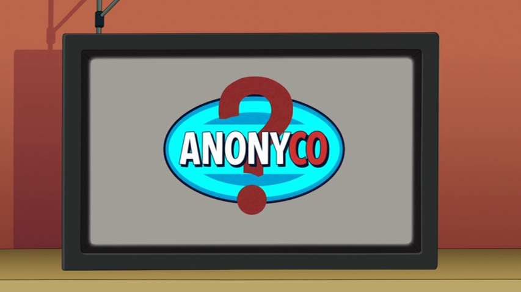

"The unknown company doing unknown things." (retired CEO, the IIth)
Our Mission Statement
We are Anonyco®, and we do not affiliate. We do however, pledge to make the physical and spiritual world a better place by building Churches, making schools, funding laudromats globally, teaching ethics, offering apprenticing starting at 10:30 PM, funding religious figures to teach ethics, stopping ISIS, and so much more. We do not however, tolerate further questioning of our methods, our source of income, or our IRS tax forums
Donate Today
Anonyco® depends on donations from supporters like you. To donate, buy Anonyco® stock.
If everyone not reading about this company donated just $50, Anonyco® could solve 99.3% of all first world problems in 3 years.
